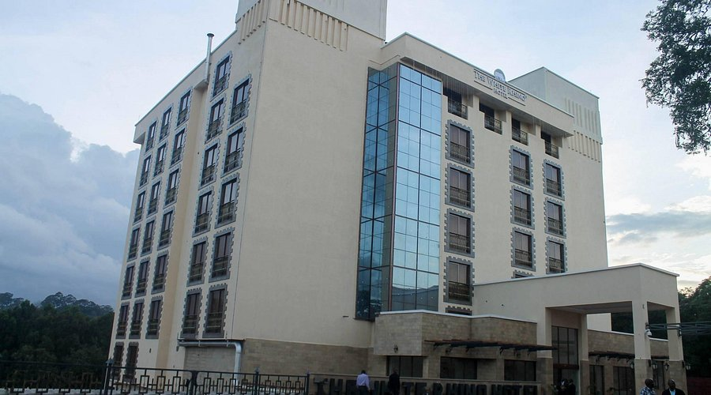
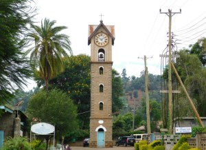
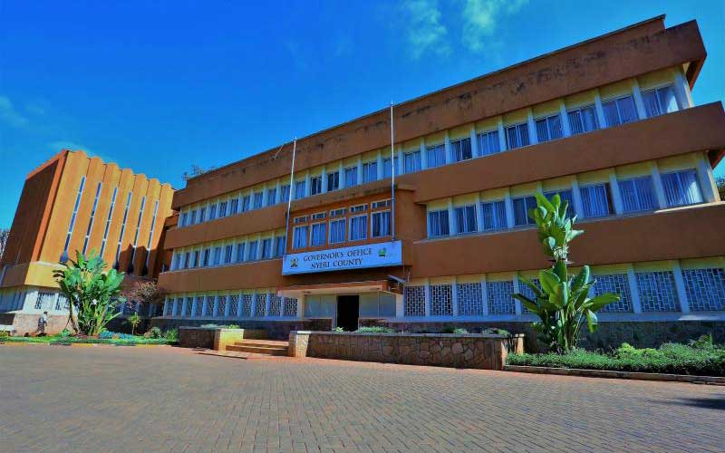

index.html
Nyeri Town Emblematic Cultural Heritage
Introduction
Nyeri Town is one of the most historically and culturally significant urban centres in Central Kenya. Situated at the foothills of Mount Kenya, it developed as an early colonial administrative centre and later transformed into a major commercial and governance hub in the region. The town’s architectural landscape reflects three major historical phases: the pre-independence colonial period, the post-independence reconstruction and Africanization phase, and the modern era of urban growth.
The emblematic structures documented in this website are not merely physical buildings; they represent the broader historical transitions that shaped Nyeri. These include missionary influence, colonial administration, the Mau Mau struggle, African entrepreneurship, cooperative economic empowerment, and contemporary urban modernization.
This platform provides a structured academic documentation of Nyeri Town’s heritage across:
- Pre-Independence Era
- Post-Independence Era
- Modern Development Era (1983–Present)
Pre-Independence Era
White Rhino Hotel (1910)

Established in 1910 during the British colonial period, the White Rhino Hotel is one of the oldest hotels in Kenya. It was founded to provide accommodation for colonial administrators, settlers, hunters, and travelers passing through Nyeri. The hotel reportedly derived its name from a white rhino shot on the site during early settlement.
Due to Nyeri’s role as a key colonial administrative centre in Central Kenya, the hotel became an important social and meeting place for European settlers and government officials. In 2001, it was officially gazetted as a national monument because of its historical and architectural significance.
Old Nyeri Clock Tower (1902)

Constructed in 1902 by the Italian Consolata Catholic missionaries, the Old Nyeri Clock Tower is among the earliest surviving permanent structures in the town. Located within the grounds of Our Lady of Consolata Cathedral, it served as a time-keeping landmark for the growing mission station and colonial settlement.
The tower symbolizes missionary influence in education, religion, and social transformation. It is preserved today as a gazetted national monument under the National Museums of Kenya.
Nyeri Museum (1924–1925)

The Nyeri Museum building was originally constructed between 1924 and 1925 as the African Native Court during colonial rule. It was used to try cases involving Africans under colonial law and played a significant role during the Mau Mau Emergency (1952–1960).
After independence in 1963, the building was preserved and later converted into a museum under the National Museums of Kenya. Today it displays colonial legal history, Mau Mau artifacts, Kikuyu cultural heritage items, and historical documents.
Osman Allu’s Shop (Early 1900s)

Osman Allu’s Shop is one of the oldest surviving commercial buildings in Nyeri town. Established in the early 1900s by Indian merchant Osman Allu, it played a foundational role in the commercial development of Nyeri.
Located along Kimathi Way, the shop supplied provisions to settlers, farmers, and mission workers, contributing to the early commercial roots of the town. Today, it stands as both a functioning business premise and a historic landmark.
Post-Independence Era
New Nyeri Law Courts (1970s)

Constructed in the 1970s after Kenya gained independence in 1963, the New Nyeri Law Courts replaced the colonial Native Court. The building symbolizes Kenya’s transition from colonial judicial systems to independent governance structures.
It accommodates magistrate chambers, courtrooms, and administrative offices, reflecting post-independence expansion of judicial infrastructure.
Kiuma Thingira Wa Wonjoria Building

This multi-storey commercial building along Kimathi Way represents post-independence economic expansion and indigenous property ownership. The name reflects Kikuyu cultural identity and signifies African ownership and entrepreneurship after 1963.
Nyeri Municipal Offices (1971)

Built when Nyeri became a municipality in 1971, this building housed offices of the mayor, town clerk, and municipal departments. It represents the strengthening of local governance and self-administration after independence.
Post Office Building

The Post Office was expanded and modernized after independence to support growing communication needs. It housed mail distribution offices, public counters, and financial services such as money orders and savings accounts.
Cooperative Office Building

Developed during the expansion of Kenya’s cooperative movement, especially in coffee farming, the Cooperative Office Building symbolizes economic empowerment of local farmers and African-managed agricultural systems.
Modern Era (1983–Present)
The modern era of Nyeri’s development is characterized by urban growth, increased private sector investment, and architectural transformation.
- Taller buildings (3–5 storeys)
- Concrete-dominated construction
- Larger glass window installations
- Expansion of financial institutions
- Growth of commercial infrastructure
This phase marks Nyeri’s continued transformation into a dynamic regional commercial and administrative centre while maintaining its historical identity.